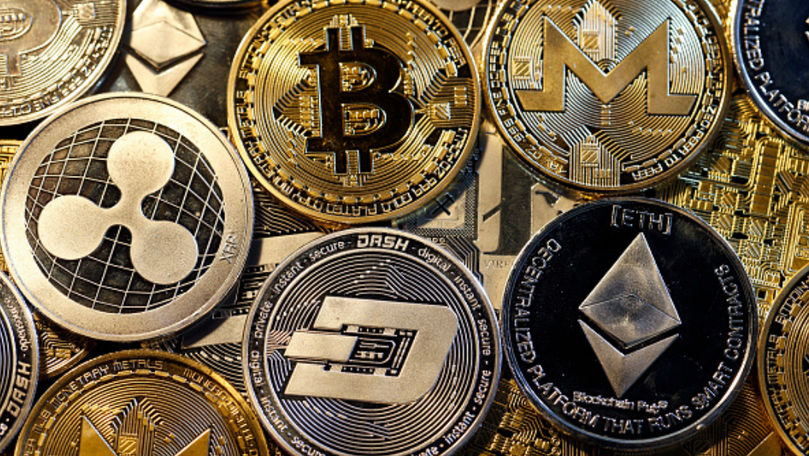

Cryptovaluta
Cryptovaluta este una dintre cele mai populare valute ale scolului nostru ce a capatat popularitate intr-un interval scrut de timp, fapt ce m-a si determinat sa invat despre aceasta cu scopul de a ma imbogati
Bitcoin
Bitcoin (din limba engleză bit: unitate de informație binară și coin: monedă),
este un sistem de plată electronică descentralizat și o monedă digitală (criptomonedă)
opensource creată în 2009 de Satoshi Nakamoto.Bitcoin (BTC) a fost
creat pentru a asigura protecția investițiilor și finanțarea liberă a afacerilor,
fără a face apel la instituții financiare și în afara oricărei constrângeri și reglementări.
Numele Bitcoin se referă de asemenea și la programul opensource pentru folosirea acestor monede,
cât și la rețeaua peer-to-peer (de la egal la egal) pe care acesta o formează.
Ethereum
Ethereum este o platformă și sistem de operare open-source, distribuit,
pe bază de blockchain, ce oferă posibilitatea implementării contractelor smart.
Ether (ETH) este criptomoneda a cărui blockchain este generat de platforma Ethereum.
Etherii pot fi transferați între conturi și utilizați pentru a recompensa participanții care minează
(i.e. rezolvă calcule matematice pentru securizarea rețelei) pentru munca depusă.
Ethereum oferă o mașină virtuală descentralizată de tip Turing-complete,
numită Ethereum Virtual Machine (EVM), care poate executa script-uri
folosind o rețea internațională de noduri publice. "Gazul" este un mecanism de stabilire a prețurilor de tranzacție,
ce are rolul de a atenua spam-ul și de a aloca resurse în rețea
Dogecoin
Dogecoin este un altcoin cu o bază mare de utilizatori și
este tranzacționat atât cu monede fiat, cât și cu alte criptomonede pe mai multe schimburi de
criptomonede de renume și platforme de investiții.
Tranzacționarea articolelor fizice și tangibile în schimbul DOGE are loc în comunități
online precum Reddit și Twitter, unde utilizatorii din astfel de cercuri împărtășesc frecvent informații
legate de criptomonede